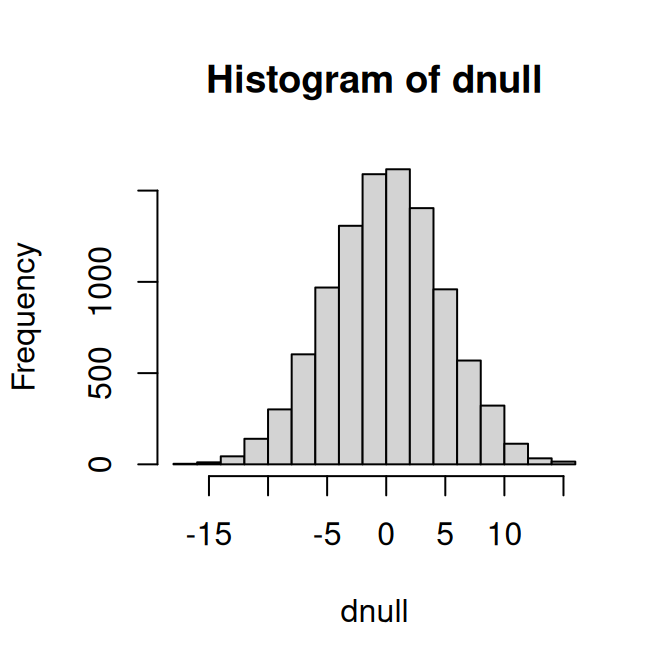
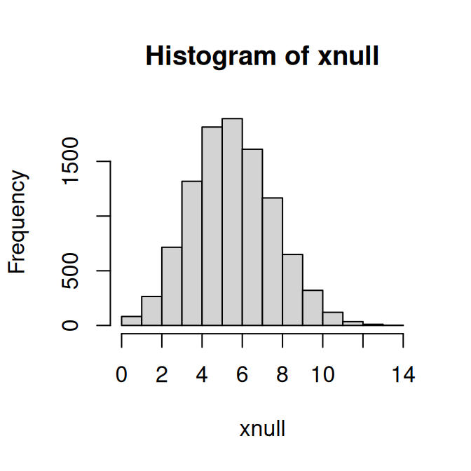
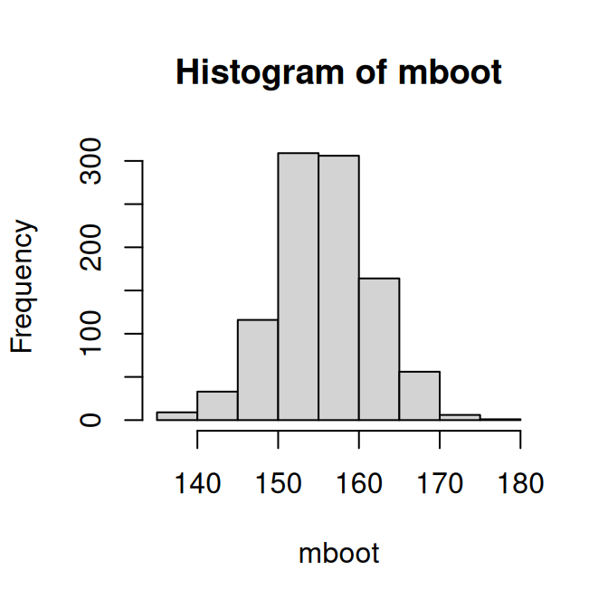
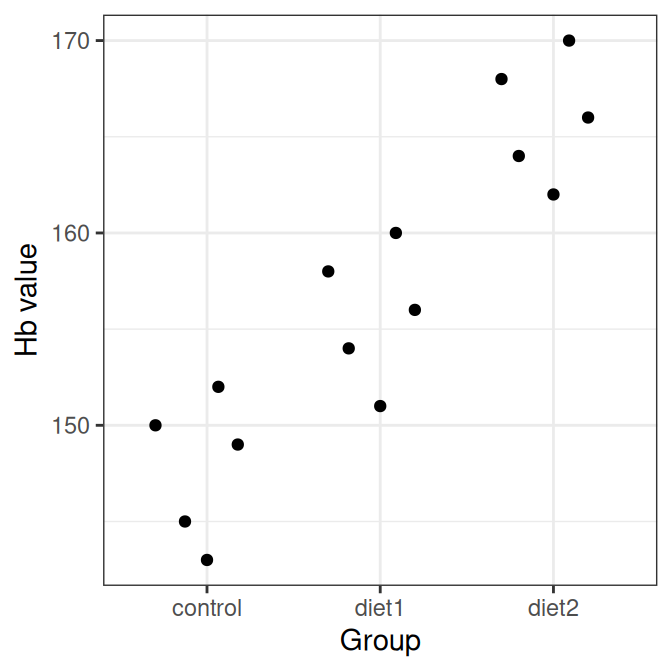
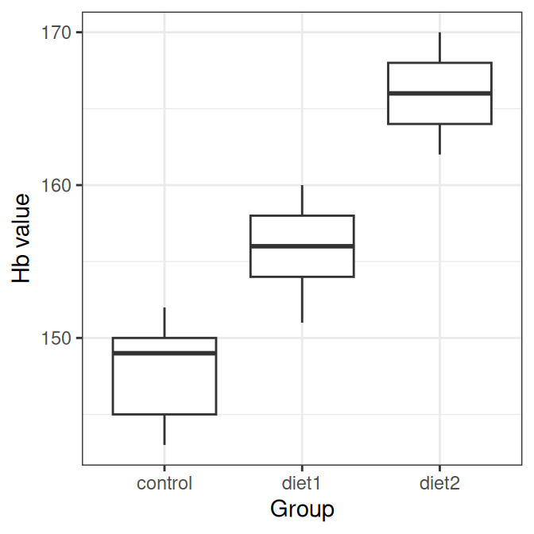
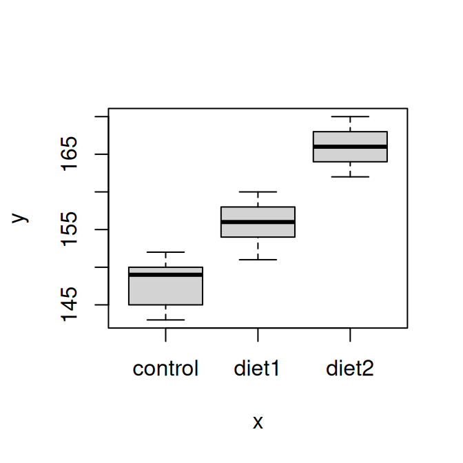

ctrl <- c(197, 186, 157, 170, 193, 188, 175, 186, 177, 191, 168, 193, 191, 189, 188, 192, 179, 186, 197, 203)
iron <- c(187, 218, 196, 210, 206, 178, 181, 193, 172, 202, 169, 221, 183, 222, 185, 174, 192, 192, 162, 211)12 Exercises: Statistical inference
Exercises marked * are extra and can be skipped if the time is short.
12.1 Hypothesis tests, resampling
Exercise 12.1 (Diet) A diet study aims to study how the hemoglobin (Hb) levels in blood are affected by an iron-rich diet consisting of tofu, soybeans, broccoli, lentils and peas. To perform the study the dietician has recruited 40 male participants, who are randomly assigned to the iron-rich diet or control group (no change in participants diet), 20 participants in each group.
The observed Hb levels (in g/L);
Perform a hypothesis test to investigate if the Hb level is affected (increased or decreased) by the iron-rich diet.
Solution
Define \(H_0\) and \(H_1\)
\(H_0: \mu_{iron} = \mu_{ctrl}\) No difference in mean Hb level between control group and iron-rich diet group.
\(H_1: \mu_{iron} \neq \mu_{ctrl}\)
Will use the significance level, \(\alpha=0.05\).
Select test statistic \(D = \bar X_{iron} - \bar X_{ctrl}\), where \(\bar X_{ctrl}\) is the mean Hb level in a control group of 20 people and \(\bar X_{iron}\) is the mean Hb level in a diet group of 20 people.
The observed value; \(d_{obs}\)
miron <- mean(iron)
mctrl <- mean(ctrl)
(dobs <- miron - mctrl)[1] 7.4Compute null distribution using permutation.
## Under null all observations are equivalent
allobs <- c(iron, ctrl)
dnull <- replicate(10000, {
## Permute the 40 observations and assign first 20 to the iron group
x <- sample(allobs)
d <- mean(x[1:20]) - mean(x[21:40])
})
hist(dnull)
Compute p-value;
(p <- mean(abs(dnull) >= abs(dobs)))[1] 0.1297As the estimated p-value is 0.1297, \(p>\alpha\), we fail to reject the null hypothesis. The data do not provide evidence against the null hypothesis, i.e. there is no reason to believe that the iron-rich diet affects the mean Hb level.
Exercise 12.2 (Pollen*) You want to investigate if the proportion of Swedish students allergic to pollen is greater than 0.3, the proportion in Sweden as a whole. To do this, you observe 20 people in a student group at BMC in Uppsala, 9 of them are allergic to pollen.
Is there reason to believe that the proportion of Swedish students allergic to pollen is greater than 0.3? Perform a hypothesis test to answer the question.
Can you identify any problems with this study setup?
Solution
\(H_0: \pi=0.3\) \(H_1: \pi>0.3\)
Set the significance level to \(\alpha=0.05\).
The test statistic is \(X\), the number of allergic people in a sample of size 20.
\(x_{obs} = 9\)
Simulate null distribution

Compute p-value, i.e. if null is true what is the probability to observe \(x_{obs}\) or higher?
xobs <- 9
(p <- mean(xnull>=xobs))[1] 0.1138As \(p>\alpha\) we fail to reject the null hypothesis. The data do not provide evidence against the null hypothesis, i.e. there is no reason to believe that the students are more allergic than the general Swedish population.
Problems with the study: Discuss in your group! Is the sample random? Is it reasonable to select 20 students at BMC to answer a question about all students in Sweden?
12.2 Hypothesis tests, parametric
Exercise 12.3 The hemoglobin value (Hb) in women is on average 140 g/L. You observe the following Hb values in a set of five male blood donors: 154, 140, 147, 162, 172. Assume that Hb is normally distributed. Is there a reason to believe that the mean Hb value in men differs from that in women?
Solution
Let \(X\) denote the Hb value in g/L for male blood donors.
\[H_0: \mu = 140\] \[H_1: \mu \neq 140\]
Use the significance level \(\alpha=0.05\).
Use the test statistic \(T = \frac{\bar X - \mu_0}{SE},\) where \(\mu_0\) is the population mean under \(H_0\), i.e. 140, and the standard error of the sample mean is estimated by \(SE \approx \frac{s}{\sqrt{n}}.\)
Compute \(t_{obs} = \frac{\bar x-140}{s/\sqrt{n}}.\)
x <- c(154, 140, 147, 162, 172)
## sample mean
m <- mean(x)
## estimated standard error of the sample mean
SE <- sd(x)/sqrt(5)
## Observed value of the test statistic
(tobs <- (m - 140)/SE)[1] 2.676865Compute the p-value. For a two-sided test \(P(|T|>|t_{obs}|) = P(T>|t_{obs}|) + P(T<-|t_{obs}|)\).
## P(T>tobs)
pt(tobs, df=4, lower.tail=FALSE)[1] 0.02770443## p = P(t>tobs) + P(t<-tobs) = 2 * P(t>tobs)
(p <- 2*pt(tobs, df=4, lower.tail=FALSE))[1] 0.05540887As \(p > \alpha\), we fail to reject the null hypothesis. The data do not provide evidence that the Hb value in men differs from that of women (140 g/L).
Note that the same can be achieved using the function t.test;
One Sample t-test
data: x
t = 2.6769, df = 4, p-value = 0.05541
alternative hypothesis: true mean is not equal to 140
95 percent confidence interval:
139.442 170.558
sample estimates:
mean of x
155 Exercise 12.4 The hemoglobin value (Hb) in men is on average 188 g/L. The Hb values in Exercise 12.3 were actually measured after the men had donated blood. Is there a reason to believe that the mean Hb level for men after blood donation is less than 188 g/L?
Solution
\(H_0: \mu = 188\) \(H_1: \mu < 188\)
Use the significance level \(\alpha=0.05\).
Use the test statistic \(T = \frac{\bar X - \mu_0}{SE},\) where \(\mu_0=188\) and the standard error is estimated by \(SE \approx \frac{s}{\sqrt{n}}.\)
Compute \(t_{obs} = \frac{\bar x - 188}{s/\sqrt{n}}\)
## Observed value of test statistic
(tobs <- (m-188)/SE)[1] -5.889103Compute the p-value, \(P(T<t_{obs})\)
## p=P(T<tobs)
(p <- pt(tobs, df=4, lower.tail=TRUE))[1] 0.002078429As \(p < \alpha\) the null hypothesis is rejected and we can conclude that the data provide evidence that the mean Hb value after blood donation is less than 188 g/L.
Note that the same can be achieved using the function t.test;
t.test(x, mu=188, alternative="less")
One Sample t-test
data: x
t = -5.8891, df = 4, p-value = 0.002078
alternative hypothesis: true mean is less than 188
95 percent confidence interval:
-Inf 166.946
sample estimates:
mean of x
155 Exercise 12.5 By observing the Hb values in 5 male blood donors: 154, 140, 147, 162, 172 g/L, and 5 female blood donors: 123, 140, 137, 132, 127 g/L, is there a reason to believe that the Hb level is higher in men than in women?
Solution
Let \(X_m\) denote the Hb value in men and \(X_w\) the Hb value in women.
\[H_0: \mu_m = \mu_w\] \[H_1: \mu_m > \mu_w\]
Use the significance level \(\alpha=0.05\).
Use the test statistic \(T = \frac{\bar X_m - \bar X_w}{SE}\). If we assume equal variances we can use Student’s t-test and compute SE using the pooled standard deviation. An alternative is to use Welch’s t-test (unequal variances t-test) and compute \(SE=\sqrt{\frac{s_m^2}{n_m} + \frac{s_w^2}{n_w}}\). The test statistic is t-distributed and the degrees of freedom are approximated using the Welch-Satterthwaite’s equation, as implemented in t.test.
x <- c(154, 140, 147, 162, 172)
y <- c(123, 140, 137, 132, 127)
## Perform Welch's t-test with unequal variances
tt <- t.test(x, y, alternative="greater")
tt
Welch Two Sample t-test
data: x and y
t = 3.6171, df = 6.2637, p-value = 0.00517
alternative hypothesis: true difference in means is greater than 0
95 percent confidence interval:
10.8297 Inf
sample estimates:
mean of x mean of y
155.0 131.8 As the p-value \(p=0.0051699\) is less than \(\alpha\), we reject the null hypothesis and conclude that the data provide evidence that the mean Hb is higher in male blood donors than in female.
Exercise 12.6 Based on statistics from blodcentralen we learn that male Hb values (before donation) are normally distributed with mean 188 g/L and standard deviation 16 g/L. Using this new information and the following observed Hb values in five male donors after donation: 154, 140, 147, 162, 172 g/L, is there reason to believe that the mean Hb value for men after blood donation is lower than 188 g/L?
Solution
\(H_0: \mu = 188\) \(H_1: \mu < 188\)
Use \(\alpha = 0.05\).
Under \(H_0\), the Hb value for a single male donor is normally distributed with mean 188 g/L and standard deviation 16 g/L.
\(X \sim N(188, 16^2)\)
Since the sample size is 5, the sample mean is normally distributed with \(\bar X \sim N\left(188, \frac{16^2}{5}\right),\) so the standard error of mean is \(SE = \frac{16}{\sqrt{5}}\).
Use the test statistic
\(Z = \frac{\bar X - 188}{16/\sqrt{5}} \sim N(0,1)\)
Compute \(z_{obs}\)
Compute the p-value: \[p=P(\bar X \leq x_{obs}) = P(Z \leq zobs).\]
[1] 1.995119e-06As \(p < \alpha\), we reject \(H_0\) and conclude that the data provide evidence that the mean Hb value for men after blood donation is lower than 188 g/L.
Exercise 12.7 In order to study the effect of high-fat diet, 12 mice are fed normal diet (control group) and 12 mice are fed high-fat diet. After a couple of weeks, the mouse weights in grams are recorded:
High-fat mice (g): 25, 30, 23, 18, 31, 24, 39, 26, 36, 29, 23, 32
Normal diet mice (g): 27, 25, 22, 23, 25, 37, 24, 26, 21, 26, 30, 24
Does high-fat diet increase body weight in mice?
- Assume equal variances.
- Do not assume equal variances.
Solution
## Student's t-test with pooled variances
t.test(xHF, xN, var.equal=TRUE, alternative="greater")
Two Sample t-test
data: xHF and xN
t = 1.0234, df = 22, p-value = 0.1586
alternative hypothesis: true difference in means is greater than 0
95 percent confidence interval:
-1.468785 Inf
sample estimates:
mean of x mean of y
28.00000 25.83333 ## Unequal variances with Welch approximation to the degrees of freedom (the default)
t.test(xHF, xN, var.equal=FALSE, alternative="greater")
Welch Two Sample t-test
data: xHF and xN
t = 1.0234, df = 19.818, p-value = 0.1592
alternative hypothesis: true difference in means is greater than 0
95 percent confidence interval:
-1.486449 Inf
sample estimates:
mean of x mean of y
28.00000 25.83333 Exercise 12.8 (Paired Hb values) Hemoglobin values (g/L) are measured in 8 blood donors before and after blood donation:
before <- c(154, 149, 162, 158, 171, 165, 160, 156)
after <- c(146, 141, 153, 150, 163, 156, 152, 149)Is there evidence that blood donation lowers the mean Hb level? a) State the null and alternative hypotheses. b) Explain why a paired test should be used rather than a two-sample test. c) Perform a paired t-test in R. d) What do you conclude?
Solution
- Let \(D_i = \text{Hb}_{after, i} - \text{Hb}_{before, i}\) be the within-pair differences. \(H_0: \mu_D = 0\) \(H_1: \mu_D < 0\)
- The observations are paired because each donor is measured twice. The analysis should therefore be based on the within-donor differences.
Paired t-test
data: after and before
t = -35.859, df = 7, p-value = 1.703e-09
alternative hypothesis: true mean difference is less than 0
95 percent confidence interval:
-Inf -7.695723
sample estimates:
mean difference
-8.125 - If the p-value is below 0.05, we reject \(H_0\) and conclude that the data provide evidence that blood donation lowers mean Hb.
Exercise 12.9 (Paired t-test) Hemoglobin values (Hb, g/L) are measured in 8 blood donors before and after blood donation:
before <- c(154, 149, 162, 158, 171, 165, 160, 156)
after <- c(146, 141, 153, 150, 163, 156, 152, 149)Is there evidence that blood donation lowers the mean Hb level?
- State the null and alternative hypotheses.
- Explain why a paired test should be used rather than a two-sample test.
- Perform a paired t-test in R.
- What do you conclude?
Solution
- Let \(D_i = \text{after}_i - \text{before}_i\) denote the within-donor differences.
\[H_0: \mu_D = 0\] \[H_1: \mu_D < 0\]
The observations are paired because each donor is measured twice. The analysis should therefore be based on the within-donor differences.
Perform a paired t-test:
t.test(after, before, paired=TRUE, alternative="less")
Paired t-test
data: after and before
t = -35.859, df = 7, p-value = 1.703e-09
alternative hypothesis: true mean difference is less than 0
95 percent confidence interval:
-Inf -7.695723
sample estimates:
mean difference
-8.125 - If the p-value is below 0.05, we reject \(H_0\) and conclude that the data provide evidence that blood donation lowers mean Hb.
12.3 Rank-based tests
Exercise 12.10 (Mann-Whitney / Wilcoxon rank-sum test) The following pain scores were recorded for two independent treatment groups A and B. The scores are ordinal, where higher values indicate more pain.
A <- c(2, 3, 1, 4, 2, 3, 2)
B <- c(5, 4, 6, 3, 5, 4, 6)- Why might a rank-based test be more appropriate than a two-sample t-test here?
- State the null and alternative hypotheses.
- Perform an apropriate rank-based test.
- What is your conclusion?
Solution
The response is ordinal, so a rank-based test is more appropriate than a t-test based on numerical means.
\[H_0: \text{the two groups come from the same distribution}\] \[H_1: \text{the two groups differ in location}\]
- Perform the test in R:
wilcox.test(A, B)
Wilcoxon rank sum exact test
data: A and B
W = 3, p-value = 0.005828
alternative hypothesis: true location shift is not equal to 0- If the p-value is below 0.05, we reject \(H_0\) and conclude that the data provide evidence that the two treatment groups differ.
Exercise 12.11 (Wilcoxon signed-rank test) The following symptom scores were recorded in 8 patients before and after treatment:
before <- c(8, 7, 6, 9, 8, 7, 9, 6)
after <- c(6, 5, 5, 7, 7, 6, 8, 5)You want to investigate if the treatment had an effect.
- Is this a paired design?
- What could be an appropriate test?
- Perform the test in R!
- What is your conclusion?
Solution
Each patient is measured twice, so the observations are paired.
The sample size is small and the symptom score is ordinal/discrete, so a rank-based paired test is reasonable.
Perform the Wilcoxon signed rank test in R:
wilcox.test(after, before, paired=TRUE, alternative="less")
Wilcoxon signed rank exact test
data: after and before
V = 0, p-value = 0.003906
alternative hypothesis: true location shift is less than 0- If the p-value is below 0.05, we reject \(H_0\) and conclude that the data provide evidence that symptom scores are lower after treatment.
12.4 Multiple testing
Exercise 12.12 (Many tests) A study tests 100 independent null hypotheses using significance level \(\alpha=0.05\).
- What is the probability of making at least one type I error if all 100 null hypotheses are true?
- Compute the Bonferroni-adjusted significance threshold for controlling the family-wise error rate at 0.05.
Solution
\[P(\text{at least one type I error}) = 1-(1-\alpha)^{100} = 1-(0.95)^{100}\]
1 - (1 - 0.05)^100[1] 0.9940795\[\frac{0.05}{100} = 0.0005\]
Exercise 12.13 (Adjusted p-values) Eight hypotheses were tested, giving the following p-values:
p <- c(0.0003, 0.001, 0.004, 0.012, 0.021, 0.049, 0.11, 0.24)- Compute Bonferroni-adjusted p-values.
- Compute Benjamini-Hochberg adjusted p-values.
- Which hypotheses are significant at FWER 0.05 using Bonferroni?
- Which hypotheses are significant at FDR 0.05 using Benjamini-Hochberg?
Solution
- and b)
p.adjust(p, method="bonferroni")[1] 0.0024 0.0080 0.0320 0.0960 0.1680 0.3920 0.8800 1.0000p.adjust(p, method="BH")[1] 0.00240000 0.00400000 0.01066667 0.02400000 0.03360000 0.06533333 0.12571429
[8] 0.24000000Bonferroni significance can be assessed either using the adjusted p-values or the Bonferroni threshold \(0.05/8\).
Benjamini-Hochberg significance can be assessed using the BH-adjusted p-values and comparing them to 0.05.
12.5 Point and interval estimates
Exercise 12.14 You measure the Hb value in 10 50-year old men and get the following observations; 145, 165, 134, 167, 158, 176, 156, 189, 143, 123 g/L.
- Compute a 95% bootstrap interval for the mean Hb value.
- Compute the sample mean Hb value
- Compute the sample variance
- Compute the sample standard deviation
- Assume that Hb is normally distributed and compute a point estimate and a 95% confidence interval for the mean Hb value.
Solution
obs <- c(145, 165, 134, 167, 158, 176, 156, 189, 143, 123)
mboot <- replicate(1000, {
x <- sample(obs, size=10, replace=TRUE)
mean(x)
})
hist(mboot)
## The 95% bootstrap interval is:
quantile(mboot, c(0.025, 0.975)) 2.5% 97.5%
143.700 167.105 - Sample mean
(m <- mean(obs))[1] 155.6- Sample variance
(v <- var(obs))[1] 395.1556- Sample standard deviation
(s <- sd(obs))[1] 19.87852- The point estimate is the sample mean, \(m=155.6\).
The sample size is small (\(n=10\)) and the population standard deviation unknown, hence we use the t-statistic;
\[T = \frac{\bar X - \mu}{\frac{s}{\sqrt{n}}}\] and compute the 95% confidence interval as
\[m \pm t_{\alpha/2, n-1} \frac{s}{\sqrt{n}}\]
n <- length(obs)
tcrit <- qt(0.975, df=9)
##95% confidence interval
c(m - tcrit*s/sqrt(n), m + tcrit*s/sqrt(n))[1] 141.3798 169.8202Exercise 12.15 A scale has a normally distributed error with mean 0 and standard deviation 2.3 g. You measure an object 10 times and observe the mean weight 43 g.
- Compute a 95% confidence interval of the object’s mean weight
- Compute a 90% confidence interval of the object’s mean weight
Hint
Because the measurement error standard deviation is known, a normal-based confidence interval can be used.
Solution
The measured weight is a random variable \(X \sim N(\mu, \sigma^2)\). You know that \(\sigma = 2.3\), \(\mu\) is the weight of the object.
- Compute a 95% confidence interval of the sample mean weight
## 95% confidence interval
m <- 43
sigma <- 2.3
n <- 10
z <- qnorm(0.975)
c(m - z*sigma/sqrt(10), m + z*sigma/sqrt(10))[1] 41.57447 44.42553- Compute a 90% confidence interval of the sample mean weight
z <- qnorm(0.95)
c(m - z*sigma/sqrt(10), m + z*sigma/sqrt(10))[1] 41.80366 44.19634Exercise 12.16 (CI, proportions*) The 95% confidence interval for a proportion can be computed using the formula \(p \pm z SE,\) where \(p\) the sample proportion and the standard error \(SE = \sqrt{\frac{p(1-p)}{n}}\). \(z=1.96\) for a 95% confidence interval.
We study the proportion of pollen allergic people in Uppsala and in a random sample of size 100 observe 42 pollen allergic people.
- Calculate a 95% confidence interval for \(\pi\)
- How can we get a narrower confidence interval?
- We computed a 95% interval, what if we want a 90% confidence interval?
- or a 99% confidence interval?
Solution
[1] 0.3232643 0.5167357A narrower confidence interval can be obtained by increasing the sample size. It can also be made narrower by lowering the confidence level, for example from 95% to 90%.
Change the z number,
The approximate confidence interval for a proportion is
\[p \pm z SE\]
For a 90% confidence interval use z=1.64
p <- 0.42
n <- 100
SE <- sqrt(p*(1-p)/n)
z <- qnorm(0.95)
c(p - z*SE, p + z*SE)[1] 0.3388168 0.5011832- or a 99% confidence interval?
z <- qnorm(0.995)
c(p - z*SE, p + z*SE)[1] 0.2928678 0.5471322Exercise 12.17 (Smokers*) You observe 150 students at BMC of which 25 are smokers. Compute a 95% confidence interval for the proportion of smokers among BMC students.
Solution
Point estimate of the proportion of smokers; \(p=25/150=1/6\).
The approximate confidence interval for a proportion is
\(p \pm z SE.\)
p <- 25/150
n <- 150
z <-qnorm(0.975)
SE <- sqrt(p*(1-p)/n)
## 95% CI
c(p - z*SE, p + z*SE)[1] 0.1070269 0.226306512.6 Analysis of variance (ANOVA)
Exercise 12.18 (Why ANOVA?) You want to compare the mean Hb level in three groups: a control group, a vegetarian diet group, and an iron-rich diet group.
- Why is a two-sample t-test not sufficient here?
- State the null and alternative hypotheses for a one-way ANOVA.
- What does a significant ANOVA result tell you?
Solution
A two-sample t-test compares only two groups at a time. Since there are three groups here, repeated pairwise t-tests would be needed, which increases the risk of Type I error.
The hypotheses are
\[H_0: \mu_1=\mu_2=\mu_3\] \[H_1: \text{not all group means are equal}\]
- A significant ANOVA result means that there is evidence that at least one group mean differs from the others. However, it does not tell us which groups differ.
Exercise 12.19 (Compute the F statistic) A one-way ANOVA is performed for \(k=3\) groups with total sample size \(N=18\). The following sums of squares are obtained:
- \(SS_{between}=48\)
- \(SS_{within}=72\)
- Compute the degrees of freedom for the between-group and within-group variation.
- Compute \(MS_{between}\) and \(MS_{within}\).
- Compute the F statistic.
Solution
- The degrees of freedom are
\[df_{between}=k-1=3-1=2\] \[df_{within}=N-k=18-3=15\]
- The mean squares are
\[MS_{between}=\frac{SS_{between}}{df_{between}}=\frac{48}{2}=24\] \[MS_{within}=\frac{SS_{within}}{df_{within}}=\frac{72}{15}=4.8\]
- The F statistic is
\[F=\frac{MS_{between}}{MS_{within}}=\frac{24}{4.8}=5\]
Exercise 12.20 (Interpret an ANOVA table) A one-way ANOVA gives the following table:
| Source | Df | Sum Sq | Mean Sq | F value | Pr(>F) |
|---|---|---|---|---|---|
| group | 2 | 180.4 | 90.2 | 5.63 | 0.008 |
| Residual | 27 | 432.3 | 16.0 |
- What is the null hypothesis?
- Is there evidence of a difference among the groups at the 5% significance level?
- Which row corresponds to the within-group variation?
- Does this result tell which groups differ?
Solution
- The null hypothesis is
\[H_0: \mu_1=\mu_2=\mu_3\]
Yes. Since the p-value is 0.008 and $0.008<0.05), we reject \(H_0\).
The residual row corresponds to the within-group variation.
No. The ANOVA test is an omnibus test. It tells us that at least one group mean differs, but not which groups differ.
Exercise 12.21 (One-way ANOVA in R) The following Hb values (g/L) were observed in three groups of participants:
ctrl <- c(145, 152, 149, 143, 150)
diet1 <- c(154, 158, 160, 151, 156)
diet2 <- c(166, 162, 170, 168, 164)
##Combine in a data frame
df <- data.frame(
Hb = c(ctrl, diet1, diet2),
group = factor(rep(c("control", "diet1", "diet2"), each=5))
)Perform an ANOVA test to investigate whether the mean Hb levels differ among the three groups.
- State the null and alternative hypotheses.
- Plot the data to visualize the group locations and spread.
- Perform a one-way ANOVA in R.
- Interpret the result.
Solution
- The hypotheses are
\[H_0: \mu_{control}=\mu_{diet1}=\mu_{diet2}\] \[H_1: \text{not all group means are equal}\]
- Plot the data:
## Using a beeswarm like plot
df |> ggplot(aes(x = group, y = Hb)) + geom_quasirandom() + theme_bw() + xlab("Group") + ylab("Hb value")
## Using a boxplot
df |> ggplot(aes(x = group, y = Hb)) + geom_boxplot() + theme_bw() + xlab("Group") + ylab("Hb value")
## Can also be done using plot
plot(df$group, df$Hb)
- Perform one-way ANOVA in R:
fit <- aov(Hb ~ group, data = df)
summary(fit) Df Sum Sq Mean Sq F value Pr(>F)
group 2 832.1 416.1 34.77 1.02e-05 ***
Residuals 12 143.6 12.0
---
Signif. codes: 0 '***' 0.001 '**' 0.01 '*' 0.05 '.' 0.1 ' ' 1- The ANOVA p-value is 1.0161078^{-5}. Because the p-value is below 0.05, we reject \(H_0\) and conclude that there is evidence that not all group means are equal.
Exercise 12.22 (Post hoc comparisons) Continue with the data from Exercise 12.21.
- Why are post hoc tests needed after a significant ANOVA result?
- Perform Tukey’s HSD test in R.
- Which pairs of groups differ significantly? Use the significance level 0.05.
Solution
ANOVA is an omnibus test. A significant ANOVA result tells us that at least one group mean differs, but it does not tell us which groups differ. To identify the specific differences, post hoc pairwise comparisons are needed.
Perform Tukey’s HSD test:
TukeyHSD(fit) Tukey multiple comparisons of means
95% family-wise confidence level
Fit: aov(formula = Hb ~ group, data = df)
$group
diff lwr upr p adj
diet1-control 8.0 2.163127 13.83687 0.0085339
diet2-control 18.2 12.363127 24.03687 0.0000070
diet2-diet1 10.2 4.363127 16.03687 0.0014703- The output shows that the pairwise comparisons between all three pairs are significant, because the adjusted p-values are below 0.05.
Exercise 12.23 (Kruskal-Wallis test) The following biomarker values were observed in three treatment groups:

- Why might the Kruskal-Wallis test be a reasonable alternative to one-way ANOVA?
- State the null and alternative hypotheses.
- Perform the Kruskal-Wallis test in R.
- What do you conclude?
Solution
The Kruskal-Wallis test is a rank-based alternative to one-way ANOVA. It can be useful when the assumptions of ANOVA, such as approximate normality within groups, are doubtful.
The null hypothesis is that the groups have the same distribution, or equivalently that the mean ranks are equal across groups.
\[H_0: \text{the group distributions are the same}\] \[H_1: \text{at least one group differs}\]
- Perform the Kruskal-Wallis test in R:
kruskal.test(biomarker ~ group, data = df2)
Kruskal-Wallis rank sum test
data: biomarker by group
Kruskal-Wallis chi-squared = 6.6131, df = 2, p-value = 0.03664- As the p-value is below 0.05, we reject \(H_0\) and conclude that there is evidence that at least one group differs from the others.